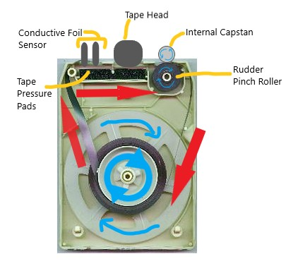
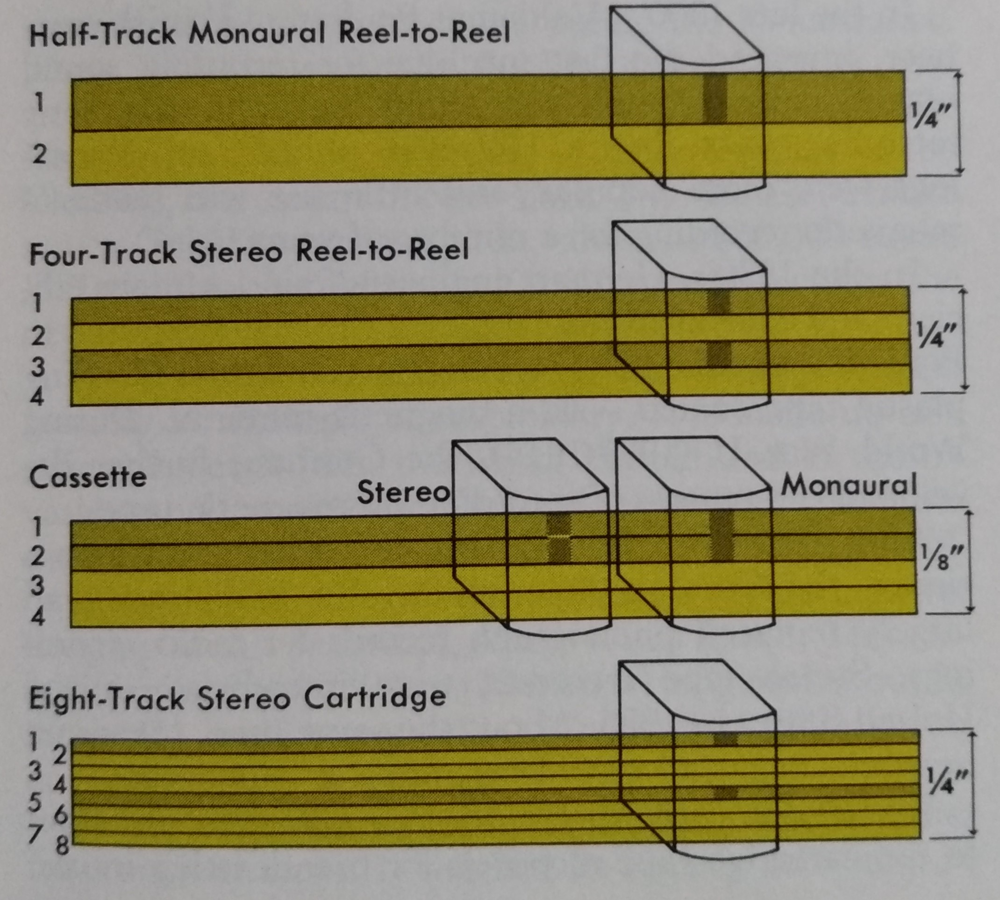

Technical Overview
How it Works
General Specs
| Number of Stereo Programs | 4 |
| Tape Speed | 3 3/4 Inches Per Second |
| Tape Height | 1/4 inch |
| Tape Length | 120 min. (maximum), 30 min. x 4 programs |
| Cartridge Size | 5.25 x 4 x 0.9 inch |
Inside the Cartridge

| LEGEND | |
| Tape Pressure Pads | Puts pressure against the tape and head, maximizing playback fidelity. |
| Conductive Foil Sensor | When the conductive foil strip passes over the two prongs, at the start/end of the tape, it closes a circuit moving the head to the next program position. |
| Tape Head | Reads the magnetic frequencies on the tape, converting them into sound. |
| Internal Capstan | Spins while pressured against the catrridge's rudder pinch roller, to move the tape. |
| Rudder Pinch Roller | It is pressured against the internal capstan which spins, helping move the tape. |
Tape Face Diagram Comparison

A comparison of the height of the tape and track layout of various
magnetic tape formats.
Sound Comparison
8-Track Tape
| Heart of Stone The Rolling Stones Original Released: 1964 This complication: 1977, 30 Greatest Hits TAPE A, ABKCO Music & Records Inc. |
MP3 Digital File
| Heart of Stone The Rolling Stones Original Released: 1964 This Compilation: 2004, ABKCO Music & Records Inc. |
8-Track's sound is inferior to compact cassette, records (LPs), compact discs and digital file formats. However, technically 8-Track cartridges should be better sound quality than compact cassette, because the tape runs at a faster speed. The amount of space for each track is the same, on both cassette and 8-Track, although 8-track's tape is double the height, with double the tracks. See diagram above.